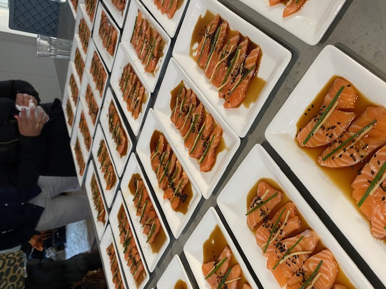
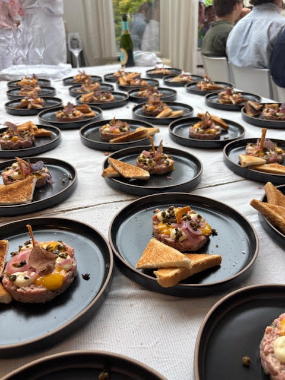
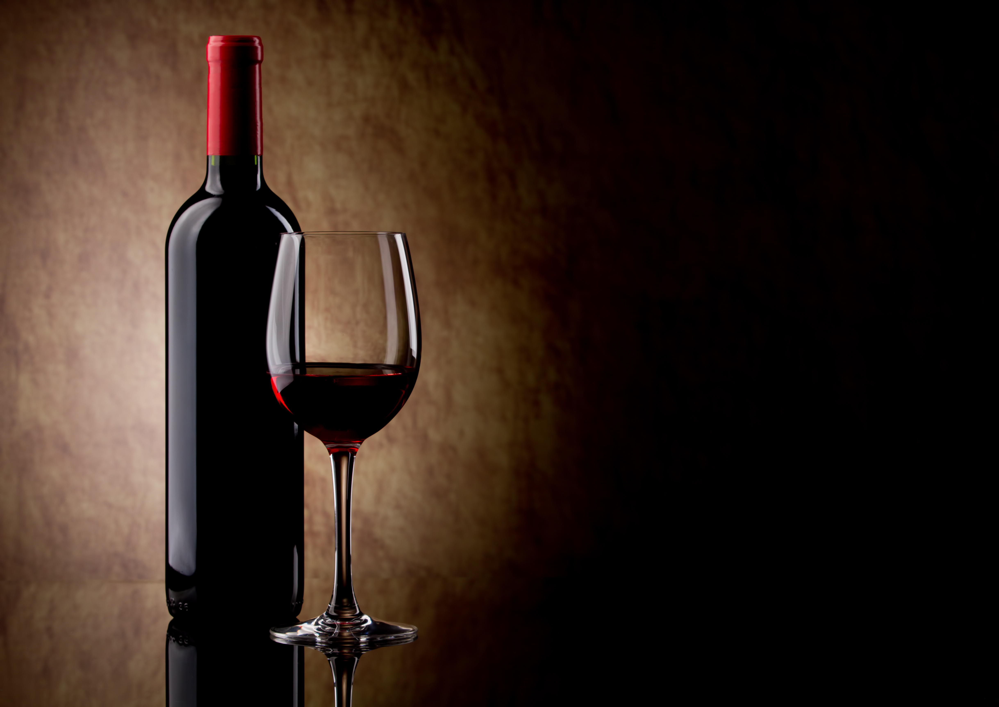

Voor bedrijven en zakelijke klanten
Business Dining
Zakelijk dineren krijgt een nieuwe dimensie wanneer het plaatsvindt in uw eigen omgeving.
TheCook.nu verzorgt verfijnde diners en lunches voor zakelijke gelegenheden, waarbij kwaliteit, discretie en volledige ontzorging centraal staan. Van intieme diners met relaties tot grotere settings met collega's waar ook walking dinners tot de mogelijkheden behoort — wij creëren een professionele, maar ontspannen sfeer waarin ruimte is voor goed gesprek en verbinding.


Wij begrijpen dat zakelijke bijeenkomsten vaak vragen om een strakke planning en specifieke wensen. Daarom stemmen wij onze service nauwkeurig af op uw programma en houden wij rekening met dieetwensen, allergieën en persoonlijke voorkeuren.
Met zorgvuldig geselecteerde producten en een persoonlijke benadering brengen wij restaurantniveau naar uw tafel.
Representatief, flexibel en tot in detail verzorgd.
Wijn Arrangement
Wijn per fles
De wijnen worden geleverd per fles, waarbij de prijs bestaat uit de inkoopsprijs plus een vast kurkengeld per fles, met een vooraf afgesproken maximale inkoopprijs.
Het kurkengeld dekt mijn werkzaamheden zoals research, inkoop en het dragen van het inkooprisico. Je betaalt uitsluitend voor de flessen die daadwerkelijk worden geopend en geserveerd.
Wijnarrangement per glas
Daarnaast kan ik een bijpassend wijnarrangement per gang verzorgen, waarbij elke gang wordt begeleid door een zorgvuldig geselecteerd glas wijn. Dit zorgt voor een complete en verfijnde smaakbeleving, vergelijkbaar met een restaurantervaring.
